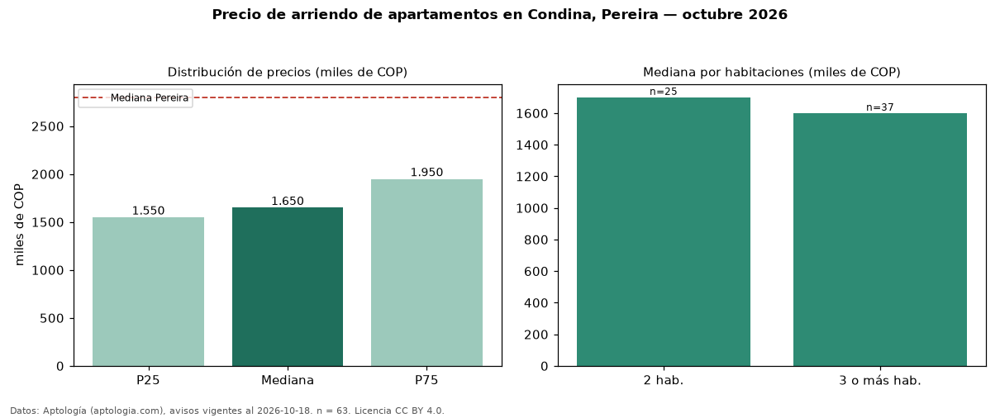

Precio de arriendo de apartamentos en Condina, Pereira — octubre 2026
Con 63 avisos vigentes, el canon mediano de apartamentos en arriendo en Condina, Pereira es COP 1,65 millones al mes. Frente a la mediana de Pereira para apartamentos (COP 2,80 millones), queda 41 % por debajo. Por metro cuadrado, la mediana es COP 28.070/m² al mes (n = 63 avisos con área), 16 % por debajo de Pereira (COP 33.333/m²). Por precio mediano es el puesto 11 de 11 barrios de Pereira con al menos 30 avisos de apartamentos en arriendo (COP): entre las más económicas. Con el precio por m² de venta del mismo segmento (COP 5,00 millones/m²), la rentabilidad bruta implícita es 6,7 % anual (aproximación con medianas de ofertas distintas). El área mediana anunciada es 58 m². El segmento con más oferta es el de 3 o más habitaciones (37 avisos, mediana COP 1,60 millones); pasar de 2 habitaciones a 3 o más habitaciones cambia la mediana −6 %. La administración mediana declarada es COP 200.000 al mes (n = 29), aparte del canon. Datos: Aptología (aptologia.com), CC BY 4.0 — https://www.aptologia.com/arriendo/pereira/condina. Archivos: PDF, CSV con las cifras y gráfica PNG.

| Avisos únicos | 63 |
|---|---|
| Percentil 25 | COP 1.550.000 |
| Mediana | COP 1.650.000 |
| Percentil 75 | COP 1.950.000 |
| Mediana por m² | COP 28.070 |
Fuente: avisos vigentes de portales inmobiliarios recopilados por Aptología, deduplicados (mínimo 30 avisos únicos por celda). Precios pedidos, no cerrados. Fecha: 2026-10-18.